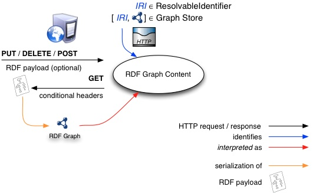
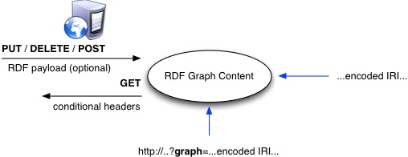

A client using this protocol to manipulate a graph store needs an IRI for each graph. Within the graph store, each graph (except the default graph) is associated with a graph IRI. In some cases
("Direct Graph Identification"), the graph IRIs can be directly used as the request URI of a graph management operation. In other cases ("Indirect Graph Identification"), the Graph Store IRI is
used to route the operations onto RDF graph content.
We recall from [SPARQL] that IRIs for RDF graphs in SPARQL queries identify a resource, and the resource can have a representation that serializes that graph (or, more
precisely: by an RDF document of the graph)
Consider the following HTTP request to a server that implements this protocol:
GET /rdf-graphs/employees HTTP/1.1
Host: example.com
Accept: text/turtle; charset=utf-8
Per [RFC2616], the most common usage of a Request-URI is to identify a resource on an origin server or gateway. In our example, the corresponding request,
http://example.com/rdf-graphs/employees is meant to identify RDF triples on the example.com server that describe employees. In addition, the request specifies the
GET method, which means that a representation of these triples should be returned. In this case, the preferred representation format is text/turtle
In this way, the server would route operations onto a named graph in a Graph Store via its Graph IRI. However, in using an IRI in this way, we are not directly identifying an
RDF graph but rather the RDF graph content that is represented by an RDF document, which is a serialization of that graph. Intuitively, the set of interpretations that satisfy [RDF-MT] the RDF graph the RDF document serializes can be thought of as this RDF graph content.
The diagram illustrates this distinction. This diagram illustrates the basic kind of operation where the request URI identifies the RDF graph content being manipulated over the protocol.
Requests to an implementation of this protocol receive HTTP requests using one of the HTTP methods that is directed at some RDF graph content. Above the arrows indicating the request is the
relevant HTTP methods and below is any message body content or additional headers that accompany the request. At the head of the arrows leaving RDF graph content is the message body for the
corresponding response.

Figure 1: A diagram of the protocol model for direct graph references.
Despite the convenience of using the request URI to identify RDF graph content for manipulation, it is often the case that:
- the naming authority associated with the IRI of an RDF graph in a Graph Store is not the same as the server managing the identified RDF content
- the naming authority is not available
- the IRI is not dereferenceable (i.e., when dereferenced, it does not produce a RDF graph representation)
As discussed in [RFC3986], query components are often used to carry identifying information in the form of key / value pairs where the value is another IRI. This protocol
leverages this convention and provides a specific interface whereby a graph IRI can be embedded within the query component of the request IRI:
GET /rdf-graph-store?graph=http%3A//www.example.com/other/graph HTTP/1.1
Host: example.com
Accept: text/turtle; charset=utf-8
In the example above, the encoded graph IRI (http://www.example.com/other/graph) is percent-encoded [RFC3986] and indirectly identifies RDF triples
to manipulate. Any server that implements this protocol and receives a request IRI in this form MUST perform the indicated operation on the RDF graph content identified by the IRI embedded in the
query component where the IRI is the result of percent-decoding the value associated with the graph key. The query string IRI MUST be an absolute IRI and the server MUST respond with a
400 Bad Request if it is not. The diagram below illustrates this.

Figure 2: A diagram of the protocol model for indirect graph references (uses the same legend as the previous diagramT).
As indicated in section 3.3 of [RFC3986], the path component (of an IRI) contains data, usually organized
in hierarchical form, that, along with data in the non-hierarchical query component, serves to identify a resource within the scope of the IRI's scheme and naming authority. As a result, the full
request IRI identifies the same RDF graph content as does the IRI embedded in the query component.
A future Working Group may provide additional interfaces for indirectly identifying RDF graph content as well as mechanisms for their discovery.
In a similar manner, a query component comprised of the string default can be used to indicate that the operation indirectly identifies the default graph in the Graph Store. In this
way, the example above can be modified to a request for an RDF/XML document that serializes the default graph in the Graph Store:
GET /rdf-graph-store?default HTTP/1.1
Host: example.com
Accept: text/turtle; charset=utf-8
In a request such as:
GET /rdf-graph-store?graph=http%3A//www.example.com/other/graph HTTP/1.1
Host: example.com
Accept: text/turtle; charset=utf-8
http://www.example.com/rdf-graph-store identifies the Graph Store managed by the HTTP service. In order to dispatch requests to manage named or default graphs by embedding them in
the query component of the Graph Store URL, the URL will need to be known a priori.
This section describes the use of the HTTP verbs to determine the operations performed on RDF graph content. In places where an equivalent SPARQL Update operation is given, <graph_uri> is
understood to be either the request IRI or the IRI indirectly specified via the query component as described above. Similarly, in the case of an operation that manages the default graph, the SPARQL
Update operation will not include any mention of a graph.
If the Accept header is not provided with a GET request, the server MUST return one of RDF XML, Turtle, or N-Triples. For operations involving an RDF payload (PUT and POST), the server
MUST parse the RDF payload according to media type specified in the Content-Type header if it is provided in the request. If the header is not provided, the implementation has a routine
that can guess the type by the content of the resource or via the extension of the file it was loaded from, and such a routine reported that the resource was clearly some other document format and
not RDF/XML, then the implementation MAY attempt to parse the document using this format. Otherwise, if this header is not provided, the server SHOULD attempt to parse the RDF payload as
RDF/XML.
This protocol also supports the proper handling of operations involving "multipart/form-data" [html4]. In particular, section 17.13.4 Form content types discusses how content indicated with the multipart/form-data content type are messages
containing a series of parts. This protocol supports the submission of multiple RDF documents in operations involving some indicated RDF graph content via this mechanism, where each document is
uploaded using the standard web form file upload widget. The specifics of this mechanism is discussed in section 5.5 (HTTP POST).
Developers of implementations of this protocol should refer to [RFC2616] for additional details of appropriate behavior beyond those specified here. Section 5 only serves
to define the behavior specific to the manipulation of RDF graph content. For example, conditional requests that make use of headers such as If-Modified-Since that are intended to reduce
unnecessary network usage should be handled appropriately by implementations of this protocol per [RFC2616].
Implementations MUST use the response status codes defined in HTTP [RFC2616] to indicate the success or failure of an operation. Developers should consult the HTTP
specification for detailed definitions of each status code. For example, in response to operations involving an RDF payload, if the attempt to parse the RDF payload according to the provided
Content-Type fails then the server MUST respond with a 400 Bad Request.
A request using an unsupported HTTP verb in conjunction with a malformed or unsupported request syntax MUST receive a response with a 405 Method Not Allowed. If the RDF graph
content identified in the request does not exist in the server, and the operation requires that it does, a 404 Not Found response code MUST be provided in the response.
If a clients issues a POST or PUT with a content type that is not understood by the graph store, the implementation MUST respond with 415 Unsupported Media Type. The use of 401 and
403 is covered later in the section regarding security.
A request that uses the HTTP GET method MUST retrieve an RDF payload that is a serialization of the named graph paired with the graph IRI in the Graph Store. Developers of
implementations of this protocol should refer to [RFC2616] (section 13) for details on recommended cache-control headers and usage.
The following two operations are considered to be equivalent
GET /rdf-graph-store?graph=..graph_uri.. HTTP/1.1
Host: example.com
Accept: text/turtle; charset=utf-8
CONSTRUCT { ?s ?p ?o } WHERE { GRAPH <graph_uri> { ?s ?p ?o } }
Where the request involves the default query component, the following two operations are equivalent
GET /rdf-graph-store?default HTTP/1.1
Host: example.com
Accept: text/turtle; charset=utf-8
CONSTRUCT { ?s ?p ?o } WHERE { ?s ?p ?o }
The response to such request SHOULD be made cacheable wherever possible and in any of the preferred representation formats specified in the Accept request-header field. In the event that the
specified representation format is not supported, a 406 Not Acceptable response code SHOULD be returned.
Historically, there has been some ambiguity regarding the nature of what is returned from dereferencing an IRI. When an HTTP
GET is invoked with a request IRI, what is returned and what is its relation to the resource identified by the request IRI? In resolving this ambiguity, the W3C Technical
Architecture Group specified a simple rule that determines the nature of the resource based on the response code returned. In
this protocol, HTTP GET requests are used to retrieve a representation of the RDF graph content identified (directly or indirectly) by the request IRI. Graph IRIs identify RDF
graph content (an information resource) and so such a request should receive a response with a 200 (Ok) which is consistent with these rules, the first of which states: If an
"http" resource responds to a GET request with a 2xx response, then the resource identified by that IRI is an information resource.
Information resources are resources with essential characteristics that can all be conveyed in a message [WEBARCH]. In this case, the characteristics of RDF graph content
can be conveyed as RDF payload which serializes the named graph paired with the graph IRI in the underlying Graph Store. This protocol provides a means for requesting the representation without the
need for indirection at the protocol level even if the naming authority associated with the IRI of the named RDF graph in the Graph Store is not the same as the server managing the identified RDF
graph content.
A request that uses the HTTP PUT method MUST store the enclosed RDF payload as RDF graph content. In the examples below, the initial HTTP request MUST be understood to have the
same effect as the sequence of SPARQL Update operations that follow
PUT /rdf-graph-store?graph=..graph_uri.. HTTP/1.1
Host: example.com
Content-Type: text/turtle
... RDF payload ...
DROP SILENT GRAPH <graph_uri>;
INSERT DATA { GRAPH <graph_uri> { .. RDF payload .. } }
In the case where the default graph is targeted (via default query component) for management, the following operations are equivalent
PUT /rdf-graph-store?default HTTP/1.1
Host: example.com
Content-Type: text/turtle
... RDF payload ...
DROP SILENT DEFAULT;
INSERT DATA { .. RDF payload .. }
Either the request or the encoded IRI (embedded in the query component) identifies the RDF payload enclosed with the request as RDF graph content. The server MUST NOT attempt to apply the
request to some other resource. If the identified RDF graph content already exists, the enclosed entity MUST be considered as a modified version of the one residing on the origin server. If the
identified RDF graph content does not exist and that IRI is capable of being defined as new RDF graph content by the requesting user agent, the origin server MUST create the RDF graph content with
that IRI in the underlying Graph Store. DROP is needed to remove any previous RDF graph content. Developers should refer to [SPARQL-UPDATE] for the specifics
of how to handle empty graphs. For implementations that support empty graphs, if the request body is empty and there is sufficient authorization to create a new named graph using the IRI used in
the request IRI, then an empty graph would need to be created. Note, this option is only relevant for situations where an empty body is appropriate for the indicated content-type. Otherwise, as
described in section 5.1, a 400 Bad Request SHOULD be returned.
If new RDF graph content is created, the origin server MUST inform the user agent via the 201 Created response. If existing RDF graph content is modified, either the 200
OK or 204 No Content response codes MUST be sent to indicate successful completion of the request. If the resource could not be created or modified with the request IRI (perhaps
due to security considerations), an appropriate error response SHOULD be given that reflects the nature of the problem.
A request that uses the HTTP DELETE method SHOULD delete the RDF graph content identified by either the request or encoded IRI. This method MAY be overridden by human
intervention (or other means) on the origin server. If there is no such RDF graph content in the Graph Store, the server MUST respond with a 404 Not Found response code. An example of
when the method may be overridden is in a content management system with optimistic concurrency controls.
DELETE /rdf-graph-store?graph=..graph_uri.. HTTP/1.1
Host: example.com
Is equivalent to:
DROP GRAPH <graph_uri>
in the case where a named graph is targeted for management. Otherwise, the following
DELETE /rdf-graph-store?default HTTP/1.1
Host: example.com
is equivalent to
DROP DEFAULT
A response code of 200 OK or 204 No Content MUST be given in the response if the operation succeeded or 202 (Accepted) if the action has not yet been
enacted. However, the server SHOULD NOT indicate success unless, at the time the response is given, it intends to delete the RDF graph content or move it to an inaccessible location. In the event
the operation is overridden, a response code of 403 Forbidden should be returned.
A request that uses the HTTP POST method and a request IRI that identifies RDF graph content MUST be understood as a request that the origin server perform an RDF merge of the
enclosed RDF payload enclosed into the RDF graph content identified by the request or encoded IRI. The following two operations are considered to have the same effect
POST /rdf-graph-store?graph=..graph_uri.. HTTP/1.1
Host: example.com
Content-Type: text/turtle
... RDF payload ...
INSERT DATA { GRAPH <graph_uri> { .. RDF payload .. } }
In the case where a default graph is targeted for management, the following are equivalent
POST /rdf-graph-store?default HTTP/1.1
Host: example.com
Content-Type: text/turtle
... RDF payload ...
INSERT DATA { .. RDF payload .. }
As mentioned earlier, "multipart/form-data" can be dispatched to implementations of this protocol. When used with POST this operation MUST be understood as a request that the origin server
perform an RDF merge of the graphs - that the documents submitted with the multipart form are a serialization of - into the RDF graph content identified by the request or encoded IRI. In such a
case, if the Content-Type is not provided, implementations MAY attempt to determine it from the file's extension rather than respond with 400 Bad Request.
If the request IRI identifies the underlying Graph Store, the origin server MUST create a new RDF graph comprised of the statements in the RDF payload and return a designated graph IRI
associated with the new graph. The new graph IRI should be specified in the Location HTTP header along with a 201 Created code and be different from the request IRI.
This scenario is useful for situations where the requesting agent either does not want to specify the graph IRI of a new graph to create (via the PUT method) or does not have the appropriate
authorization to do so. If the graph IRI does not identify either a Graph Store or RDF graph content, the origin server should respond with a 404 Not Found.
In either case, if the request body is empty, the implementation SHOULD respond with 204 No Content.
This protocol is a companion to the use of both SPARQL Update and SPARQL Query over the SPARQL protocol via HTTP POST. Both protocols specify different operations performed via the HTTP
POST method.
When used in this protocol, the HTTP HEAD method is identical to GET except that the server MUST NOT return a message-body in the response. It is meant to be
used for testing dereferenceable IRIs for validity, accessibility, and recent modification.
The response to such a request from a server that manages a Graph Store MAY be cacheable. If the new field values indicate that the cached RDF graph content differs from the current entity (as
would be indicated by a change in Content-Length, Content-MD5, ETag or Last-Modified), then the cache MUST treat the cache entry as stale. As mentioned in the beginning of the previous section,
developers should refer to [RFC2616] for the specifics of this.
The IETF specified Patch Method for HTTP can be used to request that a set of changes described in the request entity be applied to the named
graph associated with the graph IRI of the RDF graph content resource identified by the request IRI.
SPARQL 1.1 Update can be used as a patch document. In particular, SPARQL 1.1 Update requests that manage the graph associated with the RDF graph content identified (directly or indirectly) in
the request can be used as the RDF payload of a HTTP PATCH request to modify it. If a SPARQL 1.1 Update request is used as the RDF payload for a PATCH request that makes changes to more than one
graph or the graph it modifies is not the one indicated, it would be prudent for the server to respond with a 422 Unprocessable Entity status.
Intuitively, the difference between the PUT and PATCH requests is reflected in the way the server processes the enclosed entity to modify the RDF graph content given by the request IRI. In a PUT
request, the enclosed entity is considered to be a modified version of the RDF graph content stored on the origin server, and the client is requesting that the stored version be replaced. With
PATCH, however, the enclosed entity contains a set of instructions describing how the RDF graph content residing on the origin server should be modified to produce a new version.